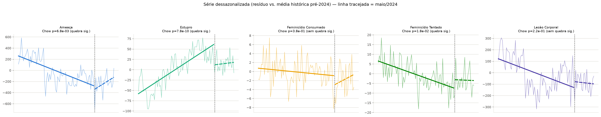

Resultados
Os quatro testes estatísticos da Camada 2 (notebooks/analise_inferencial.ipynb).
Todos os números abaixo vêm de outputs/reports/, gerado ao rodar a notebook —
nada aqui foi recalculado ou estimado à parte.
1. Tendência anual (2018–2025)
Regressão linear simples (ano → casos) por tipo de crime, com Mann-Kendall como checagem cruzada.
Leitura
Ameaça, Estupro e Feminicídio Tentado têm tendência significativa a 5% (queda para Ameaça e Feminicídio Tentado, alta para Estupro). Feminicídio Consumado e Lesão Corporal não atingem significância — com n=8 anos, o poder estatístico é baixo.
2. Sazonalidade mensal (2018–2026)
Kruskal-Wallis entre os 12 meses do ano, por tipo de crime. Onde significativo, os meses em destaque vêm de um post-hoc Mann-Whitney U mês-vs-resto com correção de Holm-Bonferroni.
Leitura
Ameaça, Estupro e Lesão Corporal têm diferença significativa entre meses. Janeiro se destaca para cima nos três; junho (e maio/julho para Lesão Corporal) se destaca para baixo. Feminicídio (tentado ou consumado) não mostra sazonalidade detectável — esperado para eventos raros, com pouca contagem mensal.
3. Correlação entre tipos de crime, por município
Spearman entre os 5 tipos de crime, por município. Duas variantes: número absoluto de casos (2012–2026) e taxa por 100 mil hab. (2012–2025).
Número absoluto de casos
Taxa por 100 mil hab.
Leitura
Boa parte da correlação em números absolutos é só efeito de porte do município — ao controlar por população, a maioria dos pares cai bastante (de ~0,7–0,9 para ~0,2–0,4). A exceção é Ameaça × Lesão Corporal, que continua forte mesmo em taxa (0,82) — os dois parecem de fato andar juntos, e não só porque cidades grandes têm mais casos de tudo.
4. Quebra estrutural em torno das enchentes de maio/2024
Teste de Chow sobre a série mensal dessazonalizada (resíduo em relação à média histórica pré-enchente): compara um único ajuste linear contra dois ajustes separados (pré e pós maio/2024).

notebooks/analise_inferencial.ipynb.Leitura
Estupro tem a quebra mais nítida (p=1,6e-14) — a tendência de alta que vinha desde 2018 se inverte após maio/2024. Feminicídio Tentado também mostra quebra significativa (p=0,015). Ameaça fica no limiar (p=0,054). Lesão Corporal e Feminicídio Consumado não mostram quebra detectável neste desenho. O post-hoc por mês equivalente (Mann-Whitney U) não detecta significância em nenhum mês/tipo — com n=6 vs n=2, o menor p-valor exato possível é 0,143, então serve só como referência descritiva.